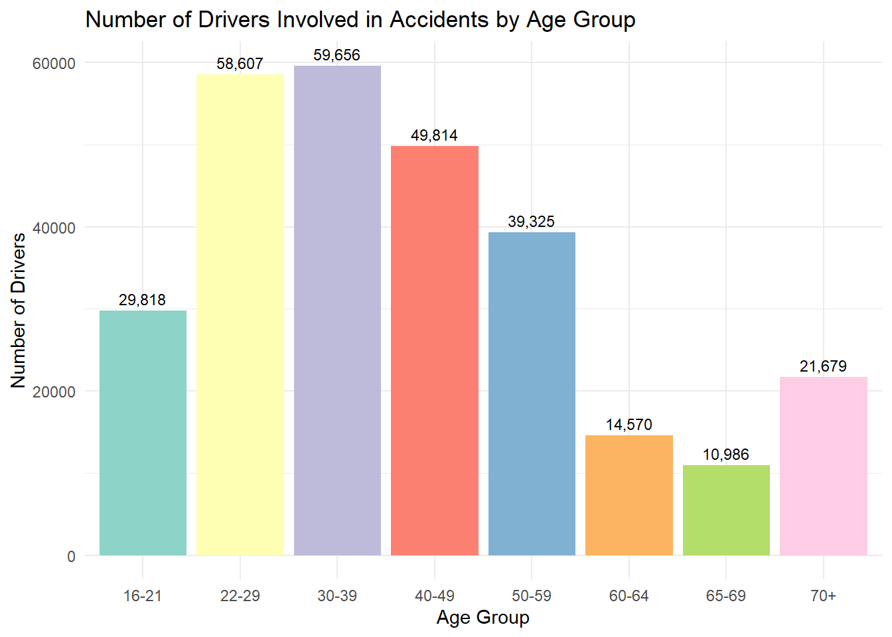
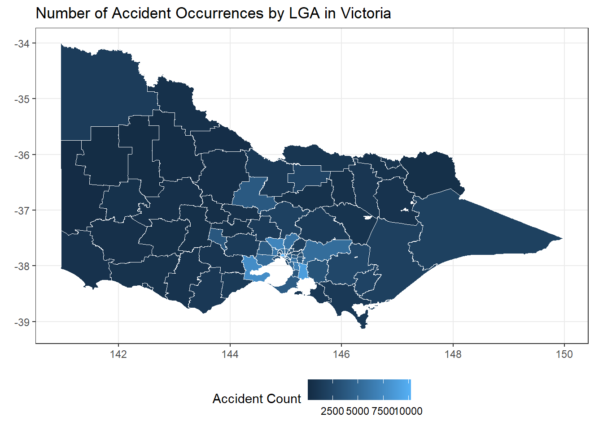
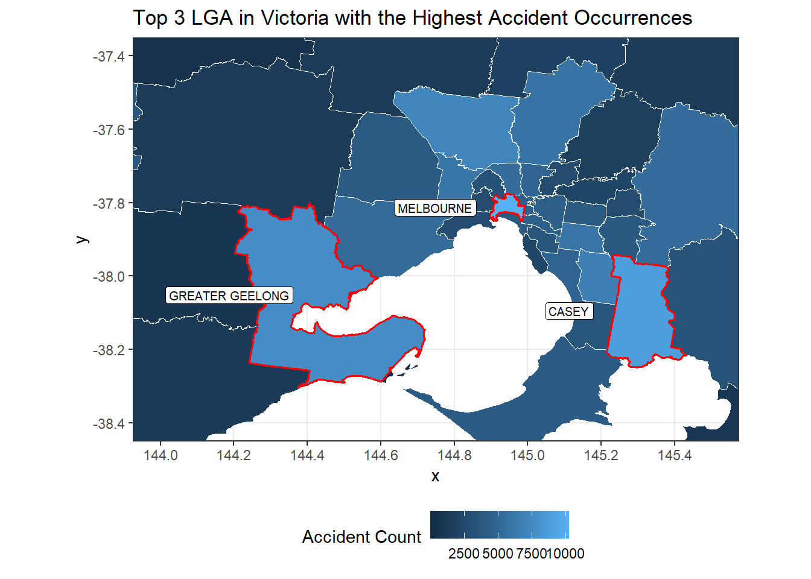

library(tidyverse)
library(lubridate)
library(kableExtra)
library(sf)
# Load the G01 census data table.
census_vic_G01 <- read_csv("data/2021Census_G01_VIC_STE.csv")Understanding the Risk Factors Behind Car Accidents in Victoria
Assignment 4 ETC5512
Questions
Understanding the key risk factors that contribute to road accidents is essential for insurance companies in determining appropriate premium pricing for drivers in Victoria. Insurers typically consider factors such as driver profiles and registered address to assess accident risk, therefore historical accident data can be used to explore and understand these factors. This analysis will address the following questions:
- How do driver characteristics such as age and sex contribute to the likelihood of accident involvement?
- Are certain areas in Victoria more prone to accidents than others?
Data Description
The datasets used in this analysis consist of two sources. The first is the Victoria Road Crash dataset which provides information about road accidents in Victoria including location and characteristics of individuals involved. The second is the 2021 Australian Census dataset filtered to Victoria, which will be used to contextualise findings from the road crash data by providing population-level characteristics such as sex and age distribution across Victoria.
Dataset 1: 2021 Victoria Census Data and GeoPackages
- Detail: The tables that will be used in this analysis will included data about population age and gender at state level.
- Source: Australian Bureau of Statistics
- Data type: Census. It aims to capture the entire population, however complete coverage is not always achievable in practice.
- Data license: Creative Commons Attribution 4.0 International. Under this licence, the data can be shared, transformed, and built upon as long as appropriate credit is given.
- Last updated date: 28 June 2022
- Data limitation: Despite being a census, undercounting remains a possibility as not all individuals may have completed the census form. Additionally, as the data represents Victoria’s population as at 2021, any changes in population composition after this date will not be reflected, meaning comparisons against more recent accident data should be interpreted with this time gap in mind. Furthermore, data is aggregated to protect individual privacy, meaning values are presented in ranges rather than exact figures, which may introduce uncertainty when used for analysis. Lastly, the age band boundaries are not consistent across all groups, for example the 85 and over category has no upper boundary, meaning it could encompass a much larger and more diverse population than other age bands of fixed intervals, which may limit the granularity of analysis for older age groups.
- Ethical considerations: As census data contains information about individuals, re-identification risk must be considered. However, as the data will only be used at an aggregated population level for comparison purposes, this risk is relatively low in this analysis. Moreover, using demographic characteristics such as age and sex to inform insurance premium pricing may raise concerns around fairness and discrimination, and findings should therefore be interpreted and presented with this in mind.
Dataset 2: Victoria Road Crash Data
- Detail: The dataset consists of multiple tables which can be joined together using a variable named accident_no, which serves as a unique identifier across all tables.
- Source: Victoria Government Data Portal (Victoria’s Department of Transport and Planning)
- Data type: Sample. This dataset is a sample as it only includes accidents which were recorded or reported.
- Data license: Creative Commons Attribution 3.0 Australia. Under this licence, the data can be shared, transformed, and built upon as long as appropriate credit is given.
- Last updated date: 9 August 2025
- Data limitation: As this dataset is a sample, it may not fully represent the entire population of road accidents in Victoria, as unreported or unrecorded accidents are excluded. Furthermore, certain variables are aggregated to protect individual privacy, which may introduce uncertainty when used for analysis, and some variables may not fully capture the circumstances surrounding each accident. These limitations were taken into consideration when selecting variables for the analysis. Similarly to the census dataset, the 70 and over age category has no upper boundary, which means it may represent a wider and more diverse group compared to other age bands of fixed intervals, potentially limiting the granularity of analysis for older age groups.
- Ethical considerations: Joining multiple tables together may increase re-identification risk, as there may be only one accident recorded in a particular LGA at a specific time and date. As the data involves personal information, re-identification risks must be carefully considered and mitigation strategies such as variable aggregation and retaining only necessary variables should be applied. Moreover, as accidents can be traumatic events for the individuals involved, this should be respectfully acknowledged when presenting and interpreting findings.
Another limitation arises when comparing both datasets as the age bands do not exactly align. For example, the census data uses an age band of 25-34 years while the road accident dataset splits this into 26-29 and 30-39 years. To address this, proportional allocation was applied by assuming that ages are uniformly distributed within each band, allowing the population count to be approximated for partial age ranges. This assumption introduces some estimation error as the actual age distribution within each band may not be perfectly uniform.
Steps to download and process the data
The datasets used in this analysis can be downloaded from the links provided in the References section.
Dataset 1: 2021 Victoria Census Data and GeoPackages
The dataset was downloaded from abs.gov.au and saved in the data folder. Two tables from the census dataset were used: G07 and G01. G07 provides 5 year age brackets which offer more granularity, however it groups everyone aged 65 and over into a single category. G01 provides more detailed age brackets for the older population, specifically 65 to 74, 75 to 84, and 85 and over. Therefore both tables were combined to produce a more complete and detailed age breakdown across all age groups. The LGA boundary GeoPackage was also downloaded from the same source and will be used to visualise accident data geographically by LGA. The data was loaded and cleaned using the following codes;
# As the census data was stored in wide format, pivot_longer was used to transform it into long format where each row represents a single category and its count.
census_vic_G01_long <- census_vic_G01 |>
pivot_longer(cols = -1, names_to = 'category',
values_to = 'count')# Filter to retain only rows related to age and sex of the population.
census_vic_G01_long <- census_vic_G01_long |>
filter(str_detect(category, 'Age')) |>
filter(!str_detect(category, 'Age_psns'))# Replace '85ov' with '85_110_yr' to ensure consistent formatting with other age category labels.
census_vic_G01_long <- census_vic_G01_long |>
mutate(
category = str_replace(category, '85ov', '85_110_yr')
)# Remove 'yr' and 'Age' from category labels as they are redundant and do not add meaningful information, which will also make it easier to separate the values into different columns in the next step.
census_vic_G01_long <- census_vic_G01_long |>
mutate(category = str_remove(category, '_yr'))
census_vic_G01_long <- census_vic_G01_long |>
mutate(category = str_remove(category, 'Age_'))# Separate the category column into three columns representing minimum age, maximum age, and sex using '_' as the delimiter.
census_vic_G01_long <- census_vic_G01_long |>
separate_wider_delim(cols = category, delim = "_",
names = c('min_age', 'max_age', 'sex'))# Filter only rows where the min_age is equal to or over than 65.
census_vic_G01_long <- census_vic_G01_long |>
filter(min_age >= 65)# Load the G07 census data table.
census_vic_G07 <- read_csv("data/2021Census_G07_VIC_STE.csv")# As the census data was stored in wide format, pivot_longer was used to transform it into long format where each row represents a single category and its count.
census_vic_G07_long <- census_vic_G07 |>
pivot_longer(cols = -1, names_to = 'category',
values_to = 'count')
# Filter to retain only rows related to age and sex of the total population.
census_vic_G07_long <- census_vic_G07_long |>
filter(str_detect(category, '_Tot_')) |>
filter(!str_detect(category, 'Tot_Tot'))# Replace '65_y_ov' with '65_110_y' to ensure consistent formatting with other age category labels.
census_vic_G07_long <- census_vic_G07_long |>
mutate(
category = str_replace(category, '65_y_ov', '65_110_y')
)# Remove 'A_' and '_y_Tot' from category labels as they are redundant and do not add meaningful information, which will also make it easier to separate the values into different columns in the next step.
census_vic_G07_long <- census_vic_G07_long |>
mutate(category = str_remove(category, 'A_'))
census_vic_G07_long <- census_vic_G07_long |>
mutate(category = str_remove(category, '_y_Tot'))# Separate the category column into three columns representing minimum age, maximum age, and sex using '_' as the delimiter.
census_vic_G07_long <- census_vic_G07_long |>
separate_wider_delim(cols = category, delim = "_",
names = c('min_age', 'max_age', 'sex'))# Filter only rows where the min_age is equal to or less than 60.
census_vic_G07_long <- census_vic_G07_long |>
filter(min_age <= 60)# Stack both tables together to create one table.
census_data_vic_tidy <- census_vic_G07_long |>
bind_rows(census_vic_G01_long)# Remove rows representing the total population count, retaining only male and female breakdown.
census_data_vic_tidy <- census_data_vic_tidy |>
select(min_age, max_age, sex, count) |>
filter(sex != 'P')# Convert min_age and max_age columns to numeric variables and sex to a factor variable.
census_data_vic_tidy <- census_data_vic_tidy |>
mutate(min_age = as.numeric(min_age),
max_age = as.numeric(max_age),
sex = factor(sex, levels = c('M', 'F')))write_csv(census_data_vic_tidy, "cleaned_data/census_data_vic_tidy.csv")The GeoPackage data was loaded.
# Load the dataset
st_layers(here::here("data/G01_VIC_GDA2020.gpkg"))
vic_lga_G01 <- read_sf(here::here("data/G01_VIC_GDA2020.gpkg"),
layer = "G01_LGA_2021_VIC")# Convert LGA names to uppercase to ensure consistent formatting for joining with the accident dataset, and retain only the LGA name and geometry columns.
vic_lga_G01 <-vic_lga_G01 |>
mutate(LGA_NAME = toupper(LGA_NAME_2021)) |>
select(LGA_NAME, geom)Dataset 2: Victoria Road Crash Data
The dataset was downloaded from data.gov.au website and saved in the data folder. The data was loaded and cleaned using the following codes;
# Load the dataset
person_data <- read_csv("data/person.csv")
location_data <- read_csv("data/node.csv")# In the person table, filter 'road_user_type_desc' to 'Drivers'.
# Keep only accident_no, sex, and age_group columns.
person_data <- person_data |>
filter(ROAD_USER_TYPE_DESC == 'Drivers') |>
select(ACCIDENT_NO, SEX, AGE_GROUP)# In the location table, only accident_no and LGA_name columns are kept.
location_data <- location_data |>
select(ACCIDENT_NO, LGA_NAME)# Join the 2 tables together using accident_no as a common column.
# Before joining the tables, the validity of the primary key which is the column used to join the tables is tested to ensure there are no duplicate values.
# For the person_data table, it is expected that some accidents may involve multiple vehicles, therefore the same accident_no may appear more than once to account for multiple drivers.
person_data |>
count(ACCIDENT_NO) |>
filter (n > 1)# For the location_data table, it is not expected to have repeated rows as one accident can only occur at one location, however there were multiple duplicated rows.
location_data |>
count(ACCIDENT_NO) |>
filter (n > 1)
# Upon further inspection, the duplicates were due to inconsistent recording of the deg_urban_name column, which was not retained in the final dataset. As the actual location and LGA name values were identical across duplicate rows, the duplicates were removed before joining.
location_data |>
group_by(ACCIDENT_NO) |>
filter(n() > 1) |>
summarise(unique_lga = n_distinct(LGA_NAME)) |>
filter(unique_lga > 1)
location_data <- location_data |>
distinct(ACCIDENT_NO, .keep_all = TRUE)# Joining the person_data table with location_data table using left_join to preserve all rows in the person_data table.
joined_data <- person_data |>
left_join(location_data, by = 'ACCIDENT_NO')# There are rows with missing LGA names, however as the number of rows with missing LGA names is insignificant, these rows will be removed.
joined_data |>
filter(is.na(LGA_NAME))# Removed rows where sex is recorded as U (undefined) as the analysis focuses on
# the difference between male and female drivers, therefore undefined sex records
# cannot be meaningfully categorised.
# Removed rows where age group is recorded as Unknown as these records cannot be
# assigned to any age group and would not contribute meaningfully to the analysis.
# Removed rows where LGA name is missing as location is required for the
# geographic analysis and joining with the GeoPackage data.
joined_data <- joined_data |>
filter(SEX != 'U') |>
filter(AGE_GROUP != 'Unknown') |>
filter(!is.na(LGA_NAME))# Convert the age_group column to a factor and recode the age bands into broader groups to align with the census data age bands for comparison.
joined_data <- joined_data |>
mutate(AGE_GROUP = case_when(
AGE_GROUP %in% c('0-4', '5-12', '13-15') ~ '0-15',
AGE_GROUP %in% c('16-17', '18-21') ~ '16-21',
AGE_GROUP %in% c('22-25', '26-29') ~ '22-29',
AGE_GROUP == '30-39' ~ '30-39',
AGE_GROUP == '40-49' ~ '40-49',
AGE_GROUP == '50-59' ~ '50-59',
AGE_GROUP == '60-64' ~ '60-64',
AGE_GROUP == '65-69' ~ '65-69',
AGE_GROUP == '70+' ~ '70+'
)) |>
mutate(AGE_GROUP = factor(AGE_GROUP, levels = c(
'0-15', '16-21', '22-29', '30-39', '40-49', '50-59', '60-64', '65-69', '70+'
)))# Convert the sex variable to factor variable.
joined_data <- joined_data |>
mutate(SEX = factor(SEX, levels = c('M', 'F')))write_csv(joined_data, "cleaned_data/road_accident_data_tidy.csv")The following steps summarise the data in preparation for further analysis. An important step is the proportional allocation of census population counts to align with the age band brackets used in the accident dataset. A proportional allocation method was applied, analogous to areal weighted interpolation, which assumes that individuals are evenly distributed within each age band and redistributes population counts proportionally based on the ratio of years needed to the total years in the band. As noted by Prener, C. (2019), this assumption of uniform distribution may not always hold in practice, and results should therefore be interpreted as approximations rather than exact values.
# Create a summary table of individuals involved in the accidents
summary_accident <- joined_data |>
group_by(AGE_GROUP, SEX) |>
summarise(count = n()) |>
rename(age_group = AGE_GROUP,
sex = SEX)# Create a summary table of population by age group and sex.
# For age ranges that do not precisely align with the accident data age bands, population counts were proportionally allocated assuming uniform distribution within each census age band.
summary_census <- bind_rows(
# Count the population in the age group of 0 - 15
census_data_vic_tidy |>
filter(min_age %in% c(0, 5, 10)) |>
group_by(sex) |>
summarise(count = sum(count)) |>
bind_rows(
census_data_vic_tidy |>
filter(min_age == 15) |>
mutate(count = round(count * 1/5, 0)) |>
group_by(sex) |>
summarise(count = sum(count))) |>
group_by(sex) |> summarise(count = sum(count)) |>
mutate(age_group = '0-15'),
# Count the population in the age group of 16 - 21
census_data_vic_tidy |>
filter(min_age == 15) |>
mutate(count = round(count * 4/5, 0)) |>
bind_rows(
census_data_vic_tidy |>
filter(min_age == 20) |>
mutate(count = round(count * 2/5, 0))) |>
group_by(sex) |>
summarise(count = sum(count)) |>
mutate(age_group = '16-21'),
# Count the population in the age group of 22 - 29
census_data_vic_tidy |>
filter(min_age == 20) |>
mutate(count = round(count * 3/5, 0)) |>
bind_rows(
census_data_vic_tidy |>
filter(min_age == 25)) |>
group_by(sex) |>
summarise(count = sum(count)) |>
mutate(age_group = '22-29'),
# Count the population in the age group of 30 - 39
census_data_vic_tidy |>
filter(min_age %in% c(30, 35)) |>
group_by(sex) |>
summarise(count = sum(count)) |>
mutate(age_group = '30-39'),
# Count the population in the age group of 40 - 49
census_data_vic_tidy |>
filter(min_age %in% c(40, 45)) |>
group_by(sex) |>
summarise(count = sum(count)) |>
mutate(age_group = '40-49'),
# Count the population in the age group of 50 - 59
census_data_vic_tidy |>
filter(min_age %in% c(50, 55)) |>
group_by(sex) |>
summarise(count = sum(count)) |>
mutate(age_group = '50-59'),
# Count the population in the age group of 60 - 64
census_data_vic_tidy |>
filter(min_age == 60) |>
group_by(sex) |>
summarise(count = sum(count)) |>
mutate(age_group = '60-64'),
# Count the population in the age group of 65 - 69
census_data_vic_tidy |>
filter(min_age == 65) |>
mutate(count = round(count * 5/10, 0)) |>
group_by(sex) |>
summarise(count = sum(count)) |>
mutate(age_group = '65-69'),
# Count the population in the age group of over 70
census_data_vic_tidy |>
filter(min_age == 65) |>
mutate(count = round(count * 5/10, 0)) |>
bind_rows(
census_data_vic_tidy |>
filter(min_age > 65) |>
group_by(sex) |>
summarise(count = sum(count))
) |>
group_by(sex) |>
summarise(count = sum(count)) |>
mutate(age_group = '70+')
)# Create an age comparison table to compare the proportion of drivers involved in accidents against the general population by age group. The 0-15 age group is excluded as the legal driving age in Victoria is 16 years old.
age_compare <- summary_accident |>
group_by(age_group) |>
summarise(no_driver = sum(count)) |>
left_join(
summary_census |>
group_by(age_group) |>
summarise(no_pop = sum(count)),
by = 'age_group'
) |>
filter(age_group != '0-15') |>
mutate(percent_driver = round(no_driver / sum(no_driver), 2),
percent_pop = round(no_pop / sum(no_pop), 2),
age_group = factor(age_group, levels = c(
'16-21', '22-29', '30-39', '40-49', '50-59', '60-64', '65-69', '70+'))
)# Create an age comparison table to compare the proportion of drivers involved in accidents against the general population by sex. The 0-15 age group is excluded as the legal driving age in Victoria is 16 years old.
sex_compare <- summary_accident |>
filter(age_group != '0-15') |>
group_by(sex) |>
summarise(no_driver = sum(count)) |>
left_join(
summary_census |>
group_by(sex) |>
summarise(no_pop = sum(count)),
by = 'sex'
) |>
mutate(percent_driver = round(no_driver / sum(no_driver), 2),
percent_pop = round(no_pop / sum(no_pop), 2))# Before joining the geometry data or map boundary data with the accident data, the common column which is LGA_NAME is inspected to detect any inconsistencies in naming.
location_data |>
group_by(LGA_NAME) |>
summarise(count = n()) |>
full_join(vic_lga_G01, by = 'LGA_NAME', keep = TRUE) |>
filter(is.na(LGA_NAME.x) | is.na(LGA_NAME.y))# The inconsistent LGA names are updated to match the naming convention used in the GeoPackage data.
joined_map_data <- location_data |>
mutate(LGA_NAME = case_when(LGA_NAME == 'BAYSIDE' ~ 'BAYSIDE (VIC.)',
LGA_NAME == 'BENDIGO' ~ 'GREATER BENDIGO',
LGA_NAME == 'DANDENONG'~ 'GREATER DANDENONG',
LGA_NAME == 'GEELONG' ~ 'GREATER GEELONG',
LGA_NAME == 'SHEPPARTON' ~ 'GREATER SHEPPARTON',
LGA_NAME == 'KINGSTON' ~ 'KINGSTON (VIC.)',
LGA_NAME == 'LATROBE' ~ 'LATROBE (VIC.)',
TRUE ~ LGA_NAME))# Accident data is aggregated by LGA and joined with the geometry data for map visualisation.
joined_map_data <- joined_map_data |>
group_by(LGA_NAME) |>
summarise(count = n()) |>
inner_join(vic_lga_G01, by = 'LGA_NAME')st_write(joined_map_data, "cleaned_data/geom_accident_data.gpkg", delete_dsn = TRUE)Comprehensive details of the data
The comprehensive details of both datasets are presented in their respective README and data dictionary files.
Why analyse risk factors contributed to road accidents in Victoria?
Sometimes we wonder why our car insurance prices change. Most drivers have experienced variability in their premiums and may have wondered what drives them. One key factor insurers consider when determining premiums is the likelihood of accidents. Understanding the factors that contribute to accident risk, and whether any of them are within our control, makes this a personally relevant and practically useful analysis.
Where does the data come from?
Data used for this analysis is obtained from two sources. The first is the Victorian Road Crash dataset distributed by Victoria’s Department of Transport and Planning, which combines information gathered from police reports and hospital records. The second is the 2021 Australian Census dataset obtained from the Australian Bureau of Statistics, which will be used to provide population context to support conclusions drawn from the analysis regarding personal characteristics such as age and sex. Further details of both datasets can be found in the Data Description section.
What does the data tell us?
Characteristics of the drivers: age and sex
To determine whether higher accident counts from certain age groups or among one sex are simply a reflection of a larger population in those groups, the proportion of drivers involved in accidents is compared against the general Victorian population using the 2021 Australian Census data. If the proportion of drivers in accidents exceeds their share of the population, it suggests that the group is overrepresented in accidents beyond what population size alone would explain.

| Age Group | % of Drivers in Accidents | % of Population |
|---|---|---|
| 16-21 | 10% | 9% |
| 22-29 | 21% | 14% |
| 30-39 | 21% | 19% |
| 40-49 | 18% | 16% |
| 50-59 | 14% | 15% |
| 60-64 | 5% | 7% |
| 65-69 | 4% | 6% |
| 70+ | 8% | 15% |
The plot shows that drivers aged 30 to 39 have the highest number of accident involvements, followed closely by the 22 to 29 age group. When compared against the population distribution of Victoria, the proportion of drivers involved in accidents from both groups exceeds their share of the general population, suggesting that the higher accident counts are not simply a result of these age groups being more populous.
Additionally, two other age groups also show a higher proportion of accident involvement relative to their population share, namely the 40 to 49 and 16 to 21 groups. This overrepresentation could indicate either riskier driving behaviour or higher driving frequency among these groups. Based on the available data alone, it is not possible to distinguish between these two explanations, which is a limitation of this dataset. However, even if the overrepresentation is driven by higher driving frequency, the likelihood of accident involvement remains elevated regardless, and this limitation does not undermine the overall conclusion.
Therefore, it can be concluded that drivers aged 30 to 39 have the highest risk of accident involvement, followed closely by the 22 to 29 age group.
| Sex | % of Drivers in Accidents | % of Population |
|---|---|---|
| M | 59% | 49% |
| F | 41% | 51% |
The table shows that 59% of drivers involved in accidents are male, while males represent only 49% of the general population. This overrepresentation suggests that male drivers are involved in accidents at a higher rate than their population share would predict. As with the age group analysis, the available data does not allow us to determine whether this is due to males driving more frequently or exhibiting riskier driving behaviour, however both factors would contribute to a higher likelihood of accident involvement.
It is also worth noting that individuals who identify as neither male nor female, or whose sex was not recorded, are not included in this analysis, which is a further limitation to consider. Overall, male drivers appear to be overrepresented in road accidents relative to their share of the Victorian population, suggesting that male drivers pose a higher accident risk and may therefore be considered a higher risk group.
Additionally, accidents sometimes involve more than one vehicle or driver, and the fault may lie with only one of the drivers involved. However, as the dataset does not contain information on fault or culpability, all drivers involved in an accident are treated equally in this analysis, which is another limitation to consider when interpreting the findings.
Which location is more prone to accidents?

| LGA | Accident Count |
|---|---|
| MELBOURNE | 10274 |
| CASEY | 8921 |
| GEELONG | 7762 |
| HUME | 7147 |
| DANDENONG | 6787 |
| BRIMBANK | 6079 |
| MONASH | 5898 |
| WHITTLESEA | 5857 |
| YARRA RANGES | 5348 |
| MORELAND | 5342 |

From the maps, the highest number of accident occurrences is concentrated around Melbourne and its surrounding suburbs, as well as larger urban centres and municipalities such as Geelong and Casey, as indicated by the lighter shading. This concentration could be attributed to higher population density in these areas, which results in greater traffic volumes and therefore increases the likelihood of accidents, or other location specific factors such as road conditions and infrastructure. However, the available data does not provide enough information to determine the exact cause, which is a limitation to consider when interpreting these findings. Nevertheless, high density urban LGAs appear to be more prone to road accidents, which has direct implications for insurance premium pricing. Drivers who reside in or frequently travel through these areas may represent a higher risk profile, and location could therefore be a meaningful factor for insurers when determining appropriate premiums for Victorian drivers.
Conclusions and Implications
While multiple factors contribute to the likelihood of accidents and influence insurance premium pricing, this analysis focused on three key factors: driver characteristics such as age and sex, and the location where accidents occurred.
From the findings, drivers aged 30 to 39 have the highest number of accident involvements, followed closely by the 22 to 29 age group. Male drivers are also overrepresented, accounting for 59% of all drivers involved in accidents despite representing only 49% of the general population. Lastly, high density urban LGAs and larger urban centres or municipalities are more prone to accidents, with Melbourne recording the highest number of accidents, followed by Casey and Geelong.
These findings suggest that younger to middle aged male drivers who reside in or frequently travel through high density urban or municipality areas represent the highest risk profile, which could inform more targeted and accurate insurance premium pricing for Victorian drivers.
References
National Cover (2026, April 13) 5 Factors Affecting Car Insurance Premiums In Australia retrieved May 29, 2026 from https://nationalcover.com.au/factors-affecting-car-insurance-premiums/
Victoria’s Department of Transport and Planning (2025, August 9) Victoria road crash data retrieved May 29, 2026 from https://www.data.gov.au/data/dataset/victoria-road-crash-data
Prener, C. (2022, May 30) Areal Weighted Interpolation retrieved June 4, 2026 from https://cran.r-project.org/web/packages/areal/vignettes/areal-weighted-interpolation.html
Australian Bureau of Statistics. (2021). Census DataPacks retrieved May 29, 2026, from https://www.abs.gov.au/census/find-census-data/datapacks
Australian Bureau of Statistics. (2021). Census GeoPackages retrieved June 4, 2026, from https://www.abs.gov.au/census/find-census-data/geopackages?release=2021&geography=VIC&table=G01&gda=GDA2020
Australian Trade and Investment Commission (2026). About Geelong retrieved June 9, 2026, from https://www.studyaustralia.gov.au/ar/life-in-australia/locations-in-australia/victoria-melbourne/geelong
State Government of Victoria (2026). Know Your Council – Casey City Council retrieved June 9, 2026, from https://www.vic.gov.au/know-your-council-casey-city-council
Wickham H, Averick M, Bryan J, Chang W, McGowan LD, François R, Grolemund G, Hayes A, Henry L, Hester J, Kuhn M, Pedersen TL, Miller E, Bache SM, Müller K, Ooms J, Robinson D, Seidel DP, Spinu V, Takahashi K, Vaughan D, Wilke C, Woo K, Yutani H (2019). “Welcome to the tidyverse.” Journal of Open Source Software_, 4(43), 1686. doi:10.21105/joss.01686 https://doi.org/10.21105/joss.01686
Garrett Grolemund, Hadley Wickham (2011). Dates and Times Made Easy with lubridate. Journal of Statistical Software, 40(3), 1-25. URL https://www.jstatsoft.org/v40/i03/
Zhu H (2024). kableExtra: Construct Complex Table with ‘kable’ and Pipe Syntax. doi:10.32614/CRAN.package.kableExtra https://doi.org/10.32614/CRAN.package.kableExtra, R package version 1.4.0, https://CRAN.R-project.org/package=kableExtra
Müller K (2025). here: A Simpler Way to Find Your Files. doi:10.32614/CRAN.package.here https://doi.org/10.32614/CRAN.package.here, R package version 1.0.2, https://CRAN.R-project.org/package=here
Pebesma, E., 2018. Simple Features for R: Standardized Support for Spatial Vector Data. The R Journal 10 (1), 439-446, https://doi.org/10.32614/RJ-2018-009
Question 5
Tell us about parts of your data processing or analysis that weren’t “sexy” and wouldn’t typically be included in a blog post. (e.g. Was their any data drudgery or time intensive wrangling? Were there any repetitive tasks or manual tasks? If it was easy, describe what made it easy?)
Data processing became particularly challenging when comparing between datasets, especially when the variables used for comparison had different formats or boundaries.
The most time intensive wrangling involved aligning the age group bands between the two datasets. As each dataset used different age band intervals, direct comparison was not possible without first resolving the inconsistency. I spent considerable time exploring appropriate methods to align both datasets, ultimately arriving at the proportional allocation approach, which also required careful implementation in code.
LGA names also came in different formats across the two datasets, requiring manual inspection to identify discrepancies before joining. Some differences were minor, such as inconsistent use of uppercase and lowercase letters, while others involved different naming conventions entirely, such as ‘Geelong’ in the accident dataset versus ‘Greater Geelong’ in the GeoPackage data. Each discrepancy had to be identified and corrected manually, which was a repetitive and time consuming process.
Lastly, the census data variable names combined minimum age, maximum age, and sex into a single column, which required separating into individual columns before the data could be used for analysis. This process required manually examining each row to identify the naming pattern and resolve any inconsistencies before the separation could be performed.
Question 6
Were there any challenges that you faced in conducting this analysis. These may take the form of data limitations or coding challenges? (e.g. Was there anything in your analysis that you were not anticipating when you started? Did you have to change your intended scope? Did you need to master a new skill? Were there any problems you were proud of solving?)
Building on the proportional allocation discussed in the previous question, inconsistent age bands were one of the most unexpected challenges I faced. I spent considerable time deciding how to appropriately resolve the inconsistency, and after settling on the proportional allocation method, the next challenge came in the form of a detailed and complex coding process. Ultimately, after resolving the inconsistency, a new limitation emerged where the figures derived from this method are estimates that carry inherent uncertainty and may not precisely reflect the true population count within each age group, which should be kept in mind when interpreting findings that involve the census comparison.
Another limitation I encountered was the possibility of confounding variables, which restricted the conclusions I could draw from the analysis. For example, while I identified certain LGAs as more prone to accidents, external circumstances such as road conditions and traffic volume were not accounted for as this information was not available in the dataset. When these factors are taken into consideration, the conclusions may differ from those presented.
Additionally, I initially planned to include external factors such as light condition and speed zone in the analysis. However, upon further consideration I decided to remove these variables due to their inherent limitations. Light condition values may be subjective as they rely on the perception of the individual who recorded the accident, and speed zone only reflects the legal speed limit of the area rather than the actual speed of the drivers at the time of the accident. Including these variables risked producing ambiguous or misleading conclusions, and I therefore excluded them from the final analysis.
Question 7
Tell us about any imperfect parts of your work and how you would like to expand or improve this analysis in future? Be clear about any limitations or aspects of your analysis that fell beyond scope.
In future, I would like to further explore the relationship between driver characteristics and specific LGAs to understand whether drivers in more urbanised areas exhibit different risk profiles compared to those in regional areas. For example, do drivers in urban LGAs tend to be involved in more accidents due to higher traffic density, or are there behavioural differences between urban and regional drivers? To investigate this, a more detailed analysis at the LGA level would be required, along with additional information about individual driving patterns which is not available in the current dataset.
I would also like to incorporate external factors that were not available in this dataset, such as weather conditions at the time of each accident. Melbourne is well known for its highly variable weather, with conditions changing rapidly within a single day, and this could be a meaningful contributor to accident likelihood. However, incorporating this factor would require detailed weather records matched to the time and location of each accident, which falls outside the scope of this analysis and the available data.
Question 8
Tell us about how you used AI in your approach to your assignment. (e.g. Was AI consistently reliable? Did you provide AI with additional context? Was there anywhere where you questioned or verified the AI outputs? Was there anywhere we AI helped you learn something new?)
I would say that I worked in collaboration with AI throughout the data cleaning and wrangling processes. The coding challenges I faced became more manageable with AI’s suggestions, which provided a starting point that I then built upon by adding the relevant variables and values to complete each code chunk. AI also provided step by step explanations of each code chunk, which helped me understand what each part of the process was doing.
However, as my analysis evolved and I revised my research questions, variables, and analysis plan along the way, the outputs generated by AI did not always reflect these changes. This meant I had to carefully review each suggestion to ensure it aligned with my current plan rather than an earlier version of the analysis.
Overall, AI helped me learn quite a lot, not only in terms of coding but also in terms of analytical methods. For example, the proportional allocation method was first suggested by AI, but I independently verified it by researching trustworthy sources rather than blindly accepting the suggestion. AI also reviewed the flow and tone of my writing throughout, providing feedback on how a blog post reader would experience the analysis, which was particularly helpful given that blog post writing differs from a typical academic assignment.
Question 9
Submit 4 earlier versions of your .qmd files to show your iterative process. Reflect on the progress made between each versions by providing a short statement for markers of what you fixed/learnt/improved/changed between each file. Also like to reflect on what changed between your first checklist submission.
Commit 1: Complete Task 1.
This commit contains the first version of the data description section. The section was later revised and refined in subsequent commits.Commit 2: Task 1: Added G07 table and stacked 2 tables together.
In this commit, I incorporated data from the G07 census table into the analysis. Initially, only the G01 dataset was used, but after cleaning the data, I found that the age variable in G01 was too broad. Therefore, I added G07 to obtain more detailed age information and stacked the two tables together.Commit 3: Add another data file, the GeoPacks and create a map.
At this stage, I revised my research question to focus on the locations where accidents occurred. To support this shift, I added the GeoPacks dataset and used it to generate a map.Commit 4: Revised the selected variable in processed dateset.
In this commit, I removed variables such as speed zone and light condition because I no longer planned to analyse them due to their limitations, which reduced their usefulness for the analysis.
Compared to my initial proposal, the scope of this analysis evolved considerably. The insurance framing was incorporated following consultation feedback, the census data was added to provide population context that was not originally planned, and certain variables such as light condition and speed zone were removed after further consideration of their limitations.
Here is the link to my repository. https://github.com/Thunchanok19/ETC5512-Assignment-4
Please note: Only the .qmd file on GitHub should be referenced. The data folders were not updated or pushed to the repository due to GitHub’s file size limitations, which prevent uploading .gpkg files. As a result, to avoid further complications when uploading data folders, only the .qmd file was updated throughout the process and reflects the full development history in the GitHub version of the project.
AI Acknowledgement
I used AI to assist with the communication aspects of my assignment and as a supplementary learning tool, mainly for coding. Specifically, AI was used to:
Perform grammar and logical checks to ensure my explanations were clearly conveyed and my points came across to the reader as intended.
Assist with coding in R, which included providing explanations and examples of how to use certain functions and data wrangling steps, including creating layers in plots and graphs.
AI did not select variables, conduct analysis, or generate any written content. All analytical decisions and final outputs reflect my own work.
Here is the link to all prompts used: https://claude.ai/share/0f8bc06a-4856-46f9-ad5f-e5d5c8867a34